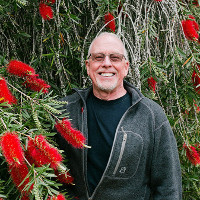
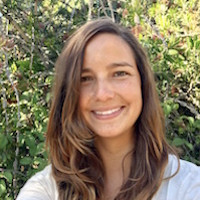
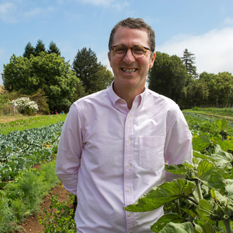
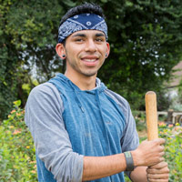

Through the Back Gate
Insider’s view of the UC Santa Cruz Farm and UC Santa Cruz Arboretum & Botanic Garden
Saturday, September 8th, 2018
11 am - 2 pm
Tickets: $40
Beverages, snacks, and lunch provided
Through the Back Gate: Insider’s view of the UC Santa Cruz Farm and UC Santa Cruz Arboretum & Botanic Garden is an exclusive look into the past, present, and future of the campus’s iconic South Campus programs. The farm and arboretum have a special place in UC Santa Cruz’s history and shape students’ experiences, careers, and perspectives in more ways than we can readily see. The visionaries and leaders of these unique campus resources will lead compelling tours of the Arboretum and UCSC Farm and give behind-the-scenes looks into little-known aspects of these special places.
Parking and event details:
The event will begin at 11am at the Arboretum where you will be guided through the beautiful gardens. The tour will break for lunch and then continue over to the UC Santa Cruz Farm. You are encouraged to wear comfortable walking shoes and a sunhat. Complimentary parking is available at the Arboretum when you arrive.
Event Schedule
| 11 am | Arrive at the Arboretum. Teas, spritzers, and other refreshments available. |
| 11:15 am |
Arboretum tours begin. Tours are 40 minutes in length.
|
| 12 noon | Enjoy lunch prepared with farm fresh produce. |
| 12:45 pm | Travel to Farm. |
| 1 pm |
Farm tours begin. Tours are 40 minutes in length.
|
| 1:45pm | Wrap up by picking up a special gift and strolling through the farm or arboretum. |
Arboretum & Botanic Garden Tour leaders
Martin Quigley, Executive Director, Arboretum
Martin Quigley, appointed as ED in May, 2016, has been employed as a nursery laborer, horticulturist, landscape architect, land planner, environmental consultant, field ecologist and researcher, and professor of botany. He has worked in New York, California, Nevada, Utah, Colorado, Louisiana, Illinois, Ohio, and Florida, as well as in Mexico, Puerto Rico, Costa Rica, Nicaragua, Venezuela, Guyana, Brazil, Uruguay, Turkey and Lebanon.
Quigley attended Deep Springs College, and earned his B.A. in Comparative Literature at Cornell University, M.L.A. in Landscape Architecture at Utah State University, and Ph.D. in Plant Ecology at Louisiana State University.
Samantha Spurlin, Plant Specialist
Samantha Spurlin is a UC Santa Cruz alumna and earned a dual degree in Environmental Studies and Biology in Spring 2015. Her career with the Arboretum began in her undergraduate years as an apprentice under Brett Hall and Rick Flores in the California Conservation Gardens. Soon after, she was hired as Plant Inventory Specialist and advanced to full-time staff January 2018. Her current projects are expanding the database on the diverse collections, strengthening the signage initiative, and furthering the California Native Plant programs under Brett Hall’s direction. She has benefited from the mentorship Brett Hall provided her and is now carrying it forward to current undergraduates. Samantha is excited to see the tradition of research, apprenticeship, and public education passed on to current students and the public.
 Rick Flores, California Native Plants Curator
Rick Flores, California Native Plants Curator
Rick Flores is a Horticulturist and Steward of the Amah Mutsun Relearning Program (AMRP). His professional experience at the Arboretum is with California native plants, but currently works in other gardens as well, helping to maintain displays of extraordinary plants. As Steward of the AMRP, Rick fosters the relationship between the Amah Mutsun Tribal Band and the Arboretum, oversees educational programming, and helps develop displays of culturally important native plants. Rick has worked at the Arboretum for over 20 years and holds both a B.A. and M.A. in Environmental Studies from UCSC.
When not at the Arboretum, Rick enjoys hiking, backpacking, fishing, mountain biking, bird watching, and just generally being outdoors, in addition to spending time with family and friends.
 John Weber, Director of the Institute of Arts and Sciences
John Weber, Director of the Institute of Arts and Sciences
His career history includes an eight-year stint as director of the Frances Young Tang Teaching Museum and Art Gallery at Skidmore College in Saratoga Springs, New York, eleven years as curator of education and public programs at the San Francisco Museum of Modern Art, and six years as curator of contemporary art at the Portland Art Museum in Oregon. He began his career as an artist and was one of the founders of Nine Gallery in Portland.
Farm Tour Leaders
Daniel Press, Executive Director, CASFS; Associate Dean, Social Sciences
Daniel Press is a Professor of Environmental Studies at UC Santa Cruz. An environmental policy analyst and scholar, he is the author of three books, the latest of which was published in 2015 (American Environmental Policy: the Failures of Compliance, Mitigation and Abatement, Edward Elgar, Inc.). With wide-ranging interests in environmental policy, he has conducted research on land and open-space preservation efforts, water and air quality, and the greening of US manufacturing.
In 2001, Professor Press was appointed to the Central Coast Regional Water Quality Control Board by Governor Gray Davis and reappointed in 2004 by Governor Arnold Schwarzenegger. In 2012, he was appointed Executive Director of CASFS and was recently appointed Associate Dean of Social Sciences at UC Santa Cruz. Professor Press’s long-term goal is to help make CASFS financially self-sufficient so that it may support agroecological research and training into its next half century and beyond.
Professor Press received his BS in Fermentation Science from the University of California, Davis in 1984 and his PhD in Political Science from the Claremont Graduate University in 1992. He has worked in the California and French wine industries.

David Robles, Second-Year Apprentice, CASFS
David Robles is a 2nd year Apprentice at CASFS. Mr. Robles first came to work at the UCSC Farm in the spring of 2013 as a UCSC undergraduate student. During his tenure at the farm, he has displayed a tireless nature and deep dedication to caring for a farm that serves undergraduates, aspiring farmers, and the Santa Cruz community through education, research, and building food access. His contributions both as a farmer and an educator have been integral to the farm’s health and sustainability. He has also worked as a staff member for the “Food, What?!” youth empowerment organization. He is especially passionate about youth leadership, music, history, and land access.
 Damian Parr, Research and Education Coordinator, CASFS
Damian Parr, Research and Education Coordinator, CASFS
Damian Parr began organic mixed vegetable truck farming in high school (1989), was a UC Santa Cruz Apprentice in Ecological Horticulture in 1991, and an Environmental Studies-Agroecology undergraduate at UCSC in 2000. Damian completed a M.Sc. in International Agriculture Development (2003) and a Ph.D. in Agricultural and Environmental Education at UC Davis in 2009. For much of his graduate work and Postdoctoral Fellowship (2010) at the UC Davis, Damian worked with colleagues at the Student Farm and Agricultural Sustainability Institute to design and implement the new UC Davis Sustainable Agriculture & Food Systems B.Sc. degree program.
Beyond organic farming, his professional interests include, experiential and transformational learning, critical pedagogy, and participatory action research. Damian is a co-founder and Past-Chair of the Sustainable Agriculture Education Association (SAEA), and recently hosted the national SAEA meeting at UC Santa Cruz.